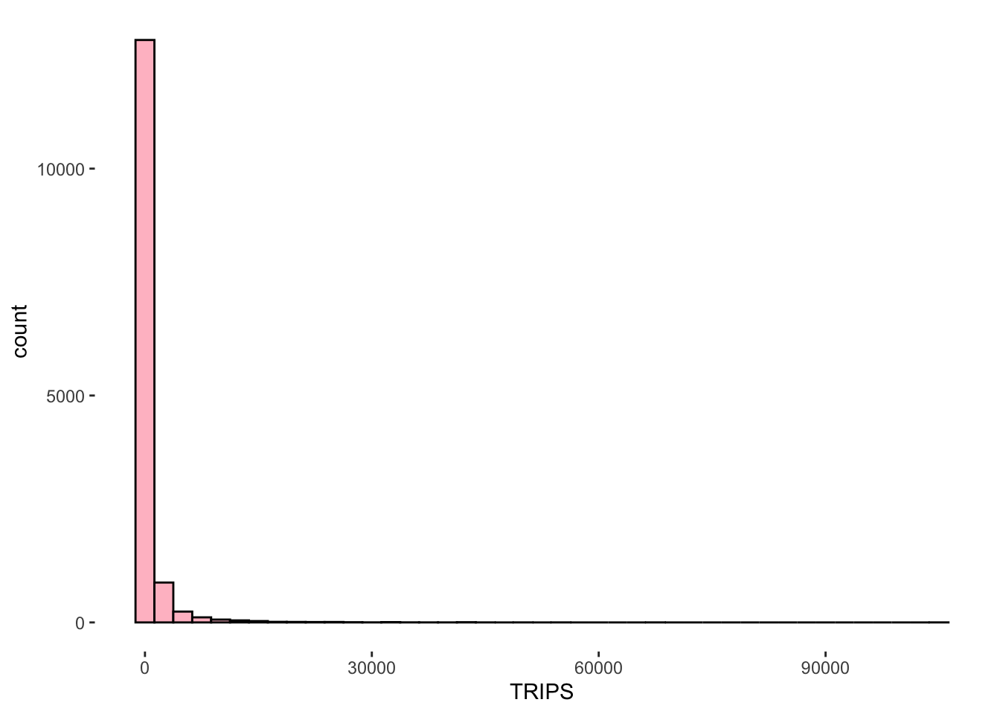
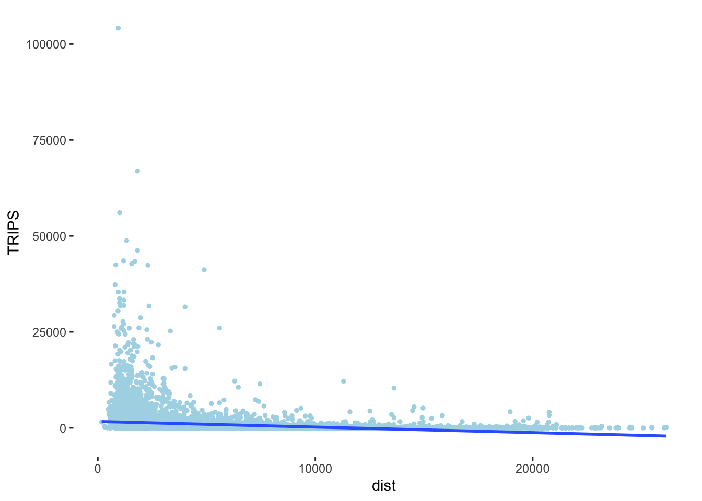
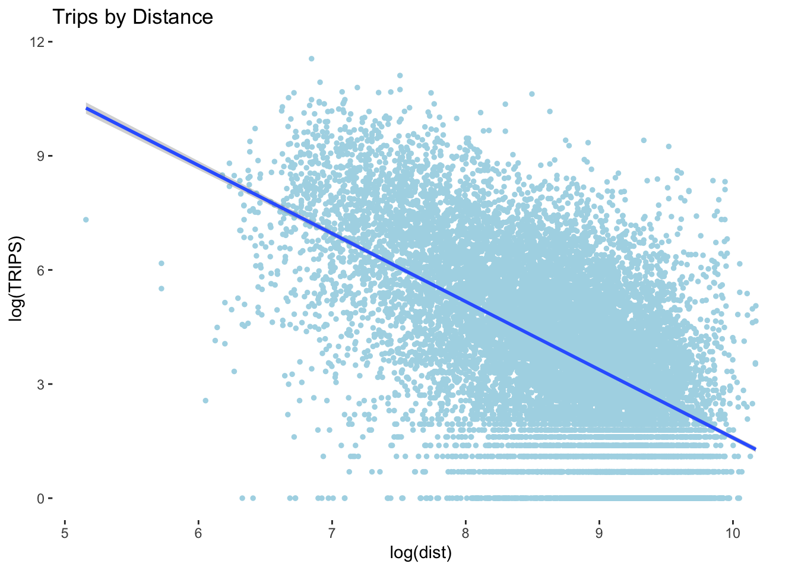

pacman::p_load(tmap, sf, sp, DT, stplanr, tidyverse, reshape2)Spatial Interaction Models
1.1 Overview
Spatial interaction model is a mathematical model that predicts the movement of people between origins and destinations by examining the distance between them. It is based on (1) their spatial separation; (2) their complementarity; and (3) other intervening opportunities or spatial structural elements serve to augment or diminish the expected flow.
Complementarity is an indicator of the suitability of the particular pair of places for the movement
Interactions may be diverted to intervening opportunities with considerations on the relative location of other interacting agents
Transferability is measured by cost or time involved in the interaction, and is often represented by a distance-decay function that shows diminishing interaction as distance increases.
Notes diagonals of distance matrix will be zero.
1.2 Load packages
sf and sp performs geospatial data import, integration, processing and transformation. DT enables R data objects (matrices or data frames) to be displayed as tables on HTML pages. tidyverse performs data import, integration, wrangling and visualisation. tmap creates thematic maps. stplanranalyses OD matrix. reshape2 restructuresa nd aggregates data.
1.3 Import data
odbus is an aspatial dataset containing the number of trips by weekdays and weekends from origin to destination bus stops. It reflects the passenger trip traffic and the most recent dataset from September 2023 will be used.
The output indicates 5,714,196 records and 7 fields. The bus stop codes are converted into factor for data handling.
Source: LTA DataMall (Postman URL)
od_data = read_rds("data/rds/od_data.rds")mpsz is a geospatial dataset from the Master Plan 2019, a forward looking guiding plan for Singapore’s development in the medium term over the next 10 to 15 years published in 2019. Note this mpsz differs from that in previous chapter, Data Wrangling.
The output indicates that the geospatial objects are multipolygon features. There are 332 features and 6 fields. It is in WGS84 projected coordinates system with XY dimension.
mpsz = read_rds("data/rds/mpsz.rds")print(class(mpsz))[1] "sf" "data.frame"pop is an aspatial dataset of Singapore residents grouped by planning area or subzone, age group, sex and floor area of residence. The data period is from June 2011 onwards. From June 2011 to 2019, the planning areas refer to areas demarcated in the Master Plan 2014, and from June 2020 onwards will be Master Plan 2019.
The output indicates 738,492 records and 7 fields to illustrate the population distribution by planning area (PA), subzone (SZ), age group (AG), residence floor area (FA), resident count (Pop).
Source: Department of Statistics (Link)
pop <- read_csv("data/aspatial/pop.csv")
glimpse(pop)Rows: 332
Columns: 5
$ PA <chr> "ANG MO KIO", "ANG MO KIO", "ANG MO KIO", "ANG MO KIO", "ANG …
$ SZ <chr> "ANG MO KIO TOWN CENTRE", "CHENG SAN", "CHONG BOON", "KEBUN B…
$ AGE7_12 <dbl> 310, 1140, 1010, 1050, 420, 810, 390, 980, 0, 260, 0, 1190, 6…
$ AGE13_24 <dbl> 710, 2770, 2650, 2390, 1120, 1920, 1150, 2000, 0, 650, 0, 326…
$ AGE25_64 <dbl> 2780, 15700, 14240, 12460, 3620, 9650, 4350, 11320, 0, 2500, …1.4 Calibrate Spatial Interaction Model
In spatial interaction, a distance matrix is a table that shows the distance between pairs of locations. two ways to compute the required distance matrix: 1. sf 2. sp
We will calibrate SIM to determine factors affecting the public bus passenger flows during the morning peak in Singapore.
Step 1: Convert from sf data table to spatial polygons data frame
as() convert mpsz from sf tibble data frame to spatial polygons data frame of sp object using sp.
mpsz_sp <- as(mpsz, "Spatial")
print(class(mpsz_sp))[1] "SpatialPolygonsDataFrame"
attr(,"package")
[1] "sp"head(mpsz_sp, n=5)class : SpatialPolygonsDataFrame
features : 5
extent : 8012.578, 33316.59, 22108.68, 31087.61 (xmin, xmax, ymin, ymax)
crs : +proj=tmerc +lat_0=1.36666666666667 +lon_0=103.833333333333 +k=1 +x_0=28001.642 +y_0=38744.572 +ellps=WGS84 +towgs84=0,0,0,0,0,0,0 +units=m +no_defs
variables : 6
names : SUBZONE_N, SUBZONE_C, PLN_AREA_N, PLN_AREA_C, REGION_N, REGION_C
min values : FORT CANNING, MESZ01, MARINA EAST, ME, CENTRAL REGION, CR
max values : ROBERTSON QUAY, WISZ01, WESTERN ISLANDS, WI, WEST REGION, WR Step 2: Compute the distance matrix
spDists() of sp package will be used to compute the Euclidean distance between the centroids of the planning subzones. The output is a matrix object class where the column and row headers are not labeled with the planning subzone codes and the diagonals are zero. There are 332 features, hence 332 points, we will limit to 5 columns and 5 rows.
dist <- spDists(mpsz_sp, longlat = FALSE)
head(dist, n = c(5, 5)) [,1] [,2] [,3] [,4] [,5]
[1,] 0.000 3926.0025 3939.108 20252.96 2989.9839
[2,] 3926.003 0.0000 305.737 16513.86 951.8314
[3,] 3939.108 305.7370 0.000 16412.06 1045.9088
[4,] 20252.964 16513.8648 16412.062 0.00 17450.3044
[5,] 2989.984 951.8314 1045.909 17450.30 0.0000mpsz_sp_selected <- mpsz_sp %>% select(mpsz@data$SUBZONE)
sp: no need
Step 3: Label the column and row headers of the distance matrix
We will obtain the planning subzone codes from SUBZONE_C and create a list of planning subzone codes.
sz_names <- mpsz$SUBZONE_C
glimpse(sz_names) chr [1:332] "MESZ01" "RVSZ05" "SRSZ01" "WISZ01" "MUSZ02" "MPSZ05" "WISZ03" ...paste0 concatenates vectors after converting to characters and attach the planning subzone codes to the row and column headers of the distance matrix.
colnames(dist) <- paste0(sz_names)
rownames(dist) <- paste0(sz_names)
glimpse(dist) num [1:332, 1:332] 0 3926 3939 20253 2990 ...
- attr(*, "dimnames")=List of 2
..$ : chr [1:332] "MESZ01" "RVSZ05" "SRSZ01" "WISZ01" ...
..$ : chr [1:332] "MESZ01" "RVSZ05" "SRSZ01" "WISZ01" ...Step 4: Pivot the distance value
melt() from reshape2 convert object into molten dataframe. We will pivot the distance matrix into a long table by using the row and column subzone codes
NEVER SORT THE DATA; SEQUENCE IS IMPT
distPair <- melt(dist) %>%
rename(dist = value)
head(distPair, 5) Var1 Var2 dist
1 MESZ01 MESZ01 0.000
2 RVSZ05 MESZ01 3926.003
3 SRSZ01 MESZ01 3939.108
4 WISZ01 MESZ01 20252.964
5 MUSZ02 MESZ01 2989.984Step 5: Revise intra-zonal distances with a constant value
Travelling to and fro the same bus stop do not generate any distance travelled and do not reflect real world scenarios. To estimate a pseudo value for intra-zonal distance, we will understand the minimumn, maximum, mean of the distance by using summary(). Filtering 0, the minimum distance between two different bus stops, in any case inter-zonal, is 173.8m. Therefore, the maximum intra-zonal distance is 86.9m.
distPair %>%
filter(dist > 0) %>%
summary() Var1 Var2 dist
MESZ01 : 331 MESZ01 : 331 Min. : 173.8
RVSZ05 : 331 RVSZ05 : 331 1st Qu.: 7149.5
SRSZ01 : 331 SRSZ01 : 331 Median :11890.0
WISZ01 : 331 WISZ01 : 331 Mean :12229.4
MUSZ02 : 331 MUSZ02 : 331 3rd Qu.:16401.7
MPSZ05 : 331 MPSZ05 : 331 Max. :49894.4
(Other):107906 (Other):107906 #min(distPair$dist)
#mean(distPair$dist)
#max(distPair$dist)Given the minimum value of dist, we will append a constant value of 50m to replace the intra-zonal distance of 0 and rename the columns to origin and destination.
Tip
ifelse(test, yes, no)
Arguments test - an object which can be coerced to logical mode yes - return values for true elements of test no - return values for false elements of test
distPair$dist <- ifelse(distPair$dist == 0,
50,
distPair$dist)
distPair <- distPair %>%
rename(orig = Var1,
dest = Var2)
summary(distPair) orig dest dist
MESZ01 : 332 MESZ01 : 332 Min. : 50
RVSZ05 : 332 RVSZ05 : 332 1st Qu.: 7097
SRSZ01 : 332 SRSZ01 : 332 Median :11864
WISZ01 : 332 WISZ01 : 332 Mean :12193
MUSZ02 : 332 MUSZ02 : 332 3rd Qu.:16388
MPSZ05 : 332 MPSZ05 : 332 Max. :49894
(Other):108232 (Other):108232 Save to RDS.
write_rds(distPair, "data/rds/distPair.rds")Step 6: Prepare data flow
Compute the total number of passenger trip between and within planning subzones using group_by() and summarise(). The output shows that there are intra-zonal trips where ORIGIN_SZ = DESTIN_SZ.
od_data <- read_rds("data/rds/od_data.rds")flow_data <- od_data %>%
group_by(ORIGIN_SZ, DESTIN_SZ) %>%
summarise(TRIPS = sum(MORNING_PEAK))
head(flow_data, n = 5)# A tibble: 5 × 3
# Groups: ORIGIN_SZ [1]
ORIGIN_SZ DESTIN_SZ TRIPS
<chr> <chr> <dbl>
1 AMSZ01 AMSZ01 2287
2 AMSZ01 AMSZ02 10057
3 AMSZ01 AMSZ03 13211
4 AMSZ01 AMSZ04 2836
5 AMSZ01 AMSZ05 6913Step 7: Separate intra-zonal flow from passenger volume df
We will calculate the number of intra-zonal flow where ORIGIN_SZ = DESTIN_SZ.
flow_data$FlowNoIntra <- ifelse(
flow_data$ORIGIN_SZ == flow_data$DESTIN_SZ,
0,
flow_data$TRIPS)
flow_data$offset <- ifelse(
flow_data$ORIGIN_SZ == flow_data$DESTIN_SZ,
0.000001,
1)
head(flow_data, n = 5)# A tibble: 5 × 5
# Groups: ORIGIN_SZ [1]
ORIGIN_SZ DESTIN_SZ TRIPS FlowNoIntra offset
<chr> <chr> <dbl> <dbl> <dbl>
1 AMSZ01 AMSZ01 2287 0 0.000001
2 AMSZ01 AMSZ02 10057 10057 1
3 AMSZ01 AMSZ03 13211 13211 1
4 AMSZ01 AMSZ04 2836 2836 1
5 AMSZ01 AMSZ05 6913 6913 1 Step 6: Combine the passenger volume data with distance value
We will convert data value type of ORIGIN_SZ and DESTIN_SZ fields of flow_data data frame into factor data type. left_join() of dplyr appends the distance between subzones from distPair data frame to flow_data data frame.
flow_data$ORIGIN_SZ <- as.factor(flow_data$ORIGIN_SZ)
flow_data$DESTIN_SZ <- as.factor(flow_data$DESTIN_SZ)
flow_data1 <- flow_data %>%
left_join(distPair,
by = c("ORIGIN_SZ" = "orig",
"DESTIN_SZ" = "dest"))
glimpse(flow_data1)Rows: 21,112
Columns: 6
Groups: ORIGIN_SZ [310]
$ ORIGIN_SZ <fct> AMSZ01, AMSZ01, AMSZ01, AMSZ01, AMSZ01, AMSZ01, AMSZ01, AM…
$ DESTIN_SZ <fct> AMSZ01, AMSZ02, AMSZ03, AMSZ04, AMSZ05, AMSZ06, AMSZ07, AM…
$ TRIPS <dbl> 2287, 10057, 13211, 2836, 6913, 2086, 1558, 2451, 2047, 14…
$ FlowNoIntra <dbl> 0, 10057, 13211, 2836, 6913, 2086, 1558, 2451, 2047, 145, …
$ offset <dbl> 1e-06, 1e+00, 1e+00, 1e+00, 1e+00, 1e+00, 1e+00, 1e+00, 1e…
$ dist <dbl> 50.0000, 810.4491, 1360.9294, 840.4432, 1076.7916, 805.297…Step 8: Preparing Origin and Destination Attributes
Based on PA and SZ of pop, we will append the planning subzone codes SUBZONE_C from mpsz. The output shows that pop has a new column SZ with subzone codes.
pop <- pop %>%
left_join(mpsz,
by = c("PA" = "PLN_AREA_N",
"SZ" = "SUBZONE_N")) %>%
select(1:6) %>%
rename(SZ_NAME = SZ,
SZ = SUBZONE_C)
glimpse(pop)Rows: 332
Columns: 6
$ PA <chr> "ANG MO KIO", "ANG MO KIO", "ANG MO KIO", "ANG MO KIO", "ANG …
$ SZ_NAME <chr> "ANG MO KIO TOWN CENTRE", "CHENG SAN", "CHONG BOON", "KEBUN B…
$ AGE7_12 <dbl> 310, 1140, 1010, 1050, 420, 810, 390, 980, 0, 260, 0, 1190, 6…
$ AGE13_24 <dbl> 710, 2770, 2650, 2390, 1120, 1920, 1150, 2000, 0, 650, 0, 326…
$ AGE25_64 <dbl> 2780, 15700, 14240, 12460, 3620, 9650, 4350, 11320, 0, 2500, …
$ SZ <chr> "AMSZ01", "AMSZ02", "AMSZ03", "AMSZ06", "AMSZ07", "AMSZ05", "…SIM_data <- read_rds("data/rds/SIM_data.rds")
glimpse(SIM_data)Rows: 14,274
Columns: 12
Groups: ORIGIN_SZ [279]
$ ORIGIN_SZ <chr> "AMSZ01", "AMSZ01", "AMSZ01", "AMSZ01", "AMSZ01", "AMS…
$ DESTIN_SZ <chr> "AMSZ02", "AMSZ03", "AMSZ04", "AMSZ05", "AMSZ06", "AMS…
$ TRIPS <dbl> 6790, 7242, 2048, 4594, 1767, 1136, 1703, 1494, 41, 39…
$ FlowNoIntra <dbl> 6790, 7242, 2048, 4594, 1767, 1136, 1703, 1494, 41, 39…
$ offset <dbl> 1, 1, 1, 1, 1, 1, 1, 1, 1, 1, 1, 1, 1, 1, 1, 1, 1, 1, …
$ dist <dbl> 810.4491, 1360.9294, 840.4432, 1076.7916, 805.2979, 17…
$ ORIGIN_AGE7_12 <dbl> 310, 310, 310, 310, 310, 310, 310, 310, 310, 310, 310,…
$ ORIGIN_AGE13_24 <dbl> 710, 710, 710, 710, 710, 710, 710, 710, 710, 710, 710,…
$ ORIGIN_AGE25_64 <dbl> 2780, 2780, 2780, 2780, 2780, 2780, 2780, 2780, 2780, …
$ DESTIN_AGE7_12 <dbl> 1140, 1010, 980, 810, 1050, 420, 390, 1190, 0, 0, 260,…
$ DESTIN_AGE13_24 <dbl> 2770, 2650, 2000, 1920, 2390, 1120, 1150, 3260, 0, 0, …
$ DESTIN_AGE25_64 <dbl> 15700, 14240, 11320, 9650, 12460, 3620, 4350, 13350, 0…1.4 Explore data
1.5 Plot data
Calibrating Spatial Interaction Models
Visualising the dependent variable
plot the distribution of the dependent variable (i.e. TRIPS) by using histogram
ggplot(data = SIM_data, aes(x = TRIPS)) +
geom_histogram(fill = "pink", color = "black",
binwidth = 2500) +
theme(
panel.background = element_blank()
)
isualise the relation between the dependent variable and one of the key independent variable in Spatial Interaction Model, namely distance.
ggplot(data = SIM_data,
aes(x = dist,
y = TRIPS)) +
geom_point(size = 1, colour = "lightblue") +
geom_smooth(method = lm) +
theme(
panel.background = element_blank()
)
plot the scatter plot by using the log transformed version of both variables, we can see that their relationship is more resemble linear relationship.
ggplot(data = SIM_data,
aes(x = log(dist),
y = log(TRIPS))) +
geom_point(size = 1, colour = "lightblue") +
labs(title = "Trips by Distance") +
geom_smooth(method = lm) +
theme(
panel.background = element_blank()
)
Checking for variables with zero values
summary(SIM_data) ORIGIN_SZ DESTIN_SZ TRIPS FlowNoIntra
Length:14274 Length:14274 Min. : 1.0 Min. : 1.0
Class :character Class :character 1st Qu.: 11.0 1st Qu.: 11.0
Mode :character Mode :character Median : 56.0 Median : 56.0
Mean : 664.3 Mean : 664.3
3rd Qu.: 296.0 3rd Qu.: 296.0
Max. :104167.0 Max. :104167.0
offset dist ORIGIN_AGE7_12 ORIGIN_AGE13_24 ORIGIN_AGE25_64
Min. :1 Min. : 173.8 Min. : 0 Min. : 0 Min. : 0
1st Qu.:1 1st Qu.: 3465.4 1st Qu.: 240 1st Qu.: 460 1st Qu.: 2210
Median :1 Median : 6121.0 Median : 710 Median : 1400 Median : 7030
Mean :1 Mean : 6951.8 Mean :1037 Mean : 2278 Mean :10536
3rd Qu.:1 3rd Qu.: 9725.1 3rd Qu.:1500 3rd Qu.: 3282 3rd Qu.:15830
Max. :1 Max. :26135.8 Max. :6340 Max. :16380 Max. :74610
DESTIN_AGE7_12 DESTIN_AGE13_24 DESTIN_AGE25_64
Min. : 0 Min. : 0 Min. : 0
1st Qu.: 250 1st Qu.: 460 1st Qu.: 2210
Median : 720 Median : 1430 Median : 7120
Mean :1040 Mean : 2305 Mean :10648
3rd Qu.:1500 3rd Qu.: 3290 3rd Qu.:15830
Max. :6340 Max. :16380 Max. :74610 replace zero values to 0.99
SIM_data$DESTIN_AGE7_12 <- ifelse(
SIM_data$DESTIN_AGE7_12 == 0,
0.99, SIM_data$DESTIN_AGE7_12)
SIM_data$DESTIN_AGE13_24 <- ifelse(
SIM_data$DESTIN_AGE13_24 == 0,
0.99, SIM_data$DESTIN_AGE13_24)
SIM_data$DESTIN_AGE25_64 <- ifelse(
SIM_data$DESTIN_AGE25_64 == 0,
0.99, SIM_data$DESTIN_AGE25_64)
SIM_data$ORIGIN_AGE7_12 <- ifelse(
SIM_data$ORIGIN_AGE7_12 == 0,
0.99, SIM_data$ORIGIN_AGE7_12)
SIM_data$ORIGIN_AGE13_24 <- ifelse(
SIM_data$ORIGIN_AGE13_24 == 0,
0.99, SIM_data$ORIGIN_AGE13_24)
SIM_data$ORIGIN_AGE25_64 <- ifelse(
SIM_data$ORIGIN_AGE25_64 == 0,
0.99, SIM_data$ORIGIN_AGE25_64)
summary(SIM_data) ORIGIN_SZ DESTIN_SZ TRIPS FlowNoIntra
Length:14274 Length:14274 Min. : 1.0 Min. : 1.0
Class :character Class :character 1st Qu.: 11.0 1st Qu.: 11.0
Mode :character Mode :character Median : 56.0 Median : 56.0
Mean : 664.3 Mean : 664.3
3rd Qu.: 296.0 3rd Qu.: 296.0
Max. :104167.0 Max. :104167.0
offset dist ORIGIN_AGE7_12 ORIGIN_AGE13_24
Min. :1 Min. : 173.8 Min. : 0.99 Min. : 0.99
1st Qu.:1 1st Qu.: 3465.4 1st Qu.: 240.00 1st Qu.: 460.00
Median :1 Median : 6121.0 Median : 710.00 Median : 1400.00
Mean :1 Mean : 6951.8 Mean :1036.73 Mean : 2278.59
3rd Qu.:1 3rd Qu.: 9725.1 3rd Qu.:1500.00 3rd Qu.: 3282.50
Max. :1 Max. :26135.8 Max. :6340.00 Max. :16380.00
ORIGIN_AGE25_64 DESTIN_AGE7_12 DESTIN_AGE13_24 DESTIN_AGE25_64
Min. : 0.99 Min. : 0.99 Min. : 0.99 Min. : 0.99
1st Qu.: 2210.00 1st Qu.: 250.00 1st Qu.: 460.00 1st Qu.: 2210.00
Median : 7030.00 Median : 720.00 Median : 1430.00 Median : 7120.00
Mean :10535.93 Mean :1039.98 Mean : 2305.33 Mean :10647.95
3rd Qu.:15830.00 3rd Qu.:1500.00 3rd Qu.: 3290.00 3rd Qu.:15830.00
Max. :74610.00 Max. :6340.00 Max. :16380.00 Max. :74610.00 Unconstrained Spatial Interaction Model
uncSIM <- glm(formula = TRIPS ~
log(ORIGIN_AGE25_64) +
log(DESTIN_AGE25_64) +
log(dist),
family = poisson(link = "log"),
data = SIM_data,
na.action = na.exclude)
uncSIM
Call: glm(formula = TRIPS ~ log(ORIGIN_AGE25_64) + log(DESTIN_AGE25_64) +
log(dist), family = poisson(link = "log"), data = SIM_data,
na.action = na.exclude)
Coefficients:
(Intercept) log(ORIGIN_AGE25_64) log(DESTIN_AGE25_64)
17.00287 0.21001 0.01289
log(dist)
-1.51785
Degrees of Freedom: 14273 Total (i.e. Null); 14270 Residual
Null Deviance: 36120000
Residual Deviance: 19960000 AIC: 20040000R-squared function
CalcRSquared <- function(observed,estimated){
r <- cor(observed,estimated)
R2 <- r^2
R2
}compute the R-squared of the unconstrained SIM
CalcRSquared(uncSIM$data$TRIPS, uncSIM$fitted.values)[1] 0.1694734#r2_mcfadden(uncSIM)Origin (Production) constrained SIM
#orcSIM <- glm(formula = TRIPS ~
# ORIGIN_SZ +
# log(DESTIN_AGE25_64) +
# log(dist),
# family = poisson(link = "log"),
# data = SIM_data,
# na.action = na.exclude)
#summary(orcSIM)examine how the constraints hold for destinations this time.
#CalcRSquared(orcSIM$data$TRIPS, orcSIM$fitted.values)Destination constrained
#decSIM <- glm(formula = TRIPS ~
# DESTIN_SZ +
# log(ORIGIN_AGE25_64) +
# log(dist),
# family = poisson(link = "log"),
# data = SIM_data,
# na.action = na.exclude)
#summary(decSIM)#CalcRSquared(decSIM$data$TRIPS, decSIM$fitted.values)Doubly constrained
#dbcSIM <- glm(formula = TRIPS ~
# ORIGIN_SZ +
# DESTIN_SZ +
# log(dist),
# family = poisson(link = "log"),
# data = SIM_data,
# na.action = na.exclude)
#summary(dbcSIM)#CalcRSquared(dbcSIM$data$TRIPS, dbcSIM$fitted.values)